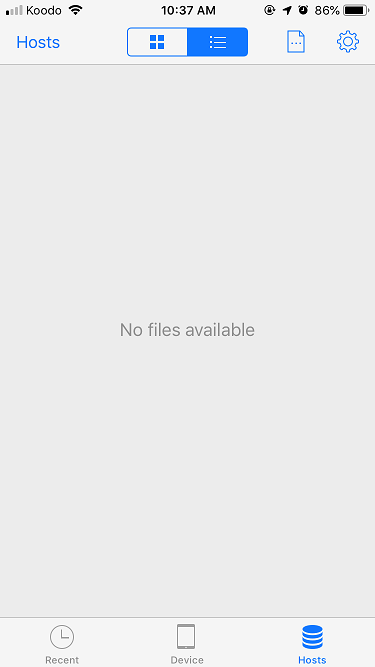
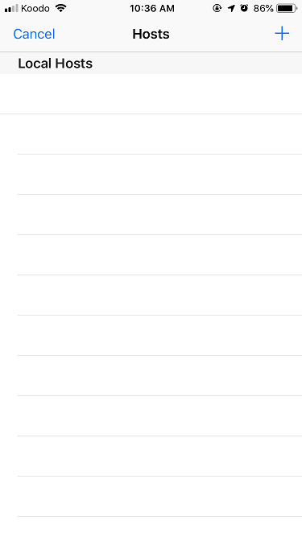
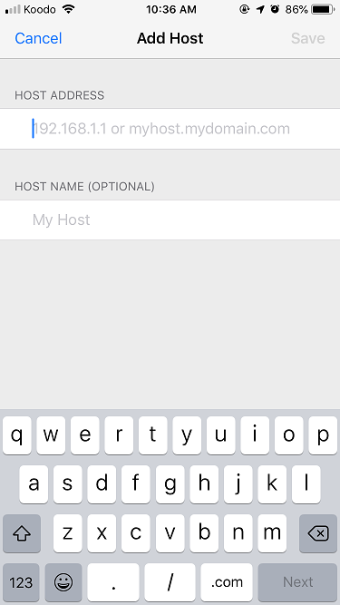

Troubleshoot FileMaker Go
If you are unable to see your shared/hosted FrameReady files in the FileMaker Go app for your iPhone or iPad, then follow these steps.
-
If you are attempting of open FrameReady on your iOS device, then make sure you have an active network license.
-
If you attempting to use the Photo Capture app, then see: iPhone and iPad Photo Capture App
Open FileMaker Go
-
Make sure that FrameReady is up and running on your Host computer.
-
Write down the IP Address of your Host computer. See: On the Host Computer (Step #8)
-
Make sure your iOS device is connected to the same wifi network as your FrameReady computer.
If it is not, then be aware that FileMaker Go cannot locate your FrameReady files. -
Make sure that the firewall on your FrameReady computer is correctly set. See: Check Host Computer Firewall
-
Open the FileMaker Go app on your iOS device.
-
Tap the Hosts icon (lower right).

-
If the message "No files available" appears, then tap the blue Hosts text button (top left).
-
If your FrameReady Host computer appears, then tap it and log in.
-
If no Local Hosts appears, then click the blue + icon (top right).

-
Enter the IP Address of your FrameReady Host computer.

-
Save Save (top right).
-
Now that you have manually added your Host, select it to see the FrameReady file. Tap the FrameReady file and login as normal.
© 2023 Adatasol, Inc.